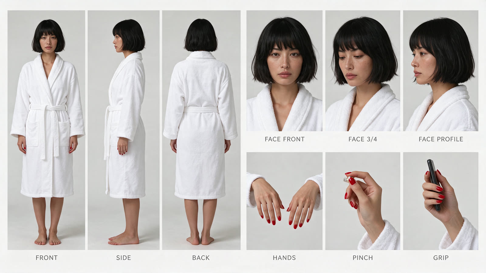

Same take. A different person.
I built a pipeline that puts a new person into an existing video. One character sheet sets the face, hair and clothes, and the performance, camera move, room and soundtrack stay as shot. It cuts the take into pieces of about five seconds, generates each one with MiniMax H3 on a rented GPU, checks its timing against the source and joins the pieces back into one shot.
Before and after
The whole 39-second stock clip in eight chained pieces: the run in the video above. Drag the line, or focus it and use the arrow keys. Both halves play from one video file, so they can't drift apart.
 BeforeAfter
BeforeAfter
Source: Pexels stock video 10265181, all 39 s, resampled from 25 to 24 fps. Result: 1920 × 1024 at 24 fps. The stock clip has no sound.
More runs
Two more stock clips. Breakdance plays as a wipe, with the source left of the moving line and the result right of it. In the serum close-up the source plays above the result.
Breakdance, 17.8 s
Pexels stock video 9344627, with spins and floor work, swapped with the same character sheet. Four chained pieces on an NVIDIA A6000. Every piece measured speed 1.000 with at most 2 frames of lag, and the sound matched the source.
Serum close-up, 15 s
Pexels stock video 7306719, the first 15 seconds. Her hands, the phone and the serum bottle are in frame the whole time, so this character sheet adds close-ups of the face, hands and red nails. Three chained pieces on an NVIDIA RTX A6000. Every piece measured speed 1.000 with at most 2 frames of lag. The clip has no sound.


How it works


- Read the take. The server measures the clip, looks for hard cuts and lays the timeline out as a frame mosaic.
- Cut it into pieces of about five seconds, never across a hard cut. Pieces from one continuous shot are chained.
- Write one prompt per piece. The character description comes from the sheet and is the same, word for word, in every piece.
- Generate each piece with MiniMax H3 on a rented GPU. A chained piece is guided by the last 22 frames of the piece before it, which carries the face, clothes and light across the join.
- Check every piece by machine: frame count, plus speed and lag against the source, matched every half second, and the sound against the source's when the clip has any. Each join is scored by how closely its two frames match. A piece that fails is rerun with one change before the next one is built on it.
- Join and retime. The pieces go back together at the source's length with its soundtrack, next to a side-by-side compare.
What the run measured
The 39-second take above, from its log, check report and scores. One NVIDIA RTX A6000, 19 November 2026.
The check report
| Piece | GPU time | Frames | Speed | Max lag | Join PSNR | Score |
|---|---|---|---|---|---|---|
| Piece 1 | 1,020 s | 118 / 118 | 1.000 | 1 frame | first piece | 100 OK |
| Piece 2 | 1,451 s | 117 / 117 | 1.000 | 1 frame | 23.8 dB | 100 OK |
| Piece 3 | 1,453 s | 117 / 117 | 1.012 | 2 frames | 22.1 dB | 93 OK |
| Piece 4, rerun | 1,428 s | 118 / 118 | 1.000 | 1 frame | 21.7 dB | 100 OK |
| Piece 5 | 1,450 s | 118 / 118 | 1.000 | 1 frame | 20.1 dB | 100 OK |
| Piece 6 | 1,450 s | 117 / 117 | 1.000 | 1 frame | 21.4 dB | 69 warning |
| Piece 7 | 1,439 s | 117 / 117 | 1.000 | 2 frames | 20.4 dB | 95 OK |
| Piece 8 | 1,439 s | 117 / 118 | 1.000 | 3 frames | 25.9 dB | 90 OK |
Limits: speed 0.95 to 1.05, lag up to 7 frames. Scores of 70 and up are OK, 50 to 69 a warning.
Piece 4's first take scored 67 because a thin gold chain from the source showed at the neck. I reran it, and the rerun scored 100.
What the first test caught
The first test was 19 seconds in four pieces on an L40S, on 12 November. Its chained pieces played at 1.03 to 1.06 times the source speed, and each join froze for 7 or 8 frames. The workflow fed each chained piece 22 frames of context but started its motion reference at the piece's own first frame, so the two were out of step. I patched it to start the reference 22 frames early. This run and the Breakdance run used the patched workflow.
The Swap page
The same pipeline runs from a page in my creative toolkit, with no terminal. Each piece waits for my decision before the next one starts.


Character and motion scores are Claude's grades against a fixed rubric. Only timing is measured.
Client work is under NDA. I can walk you through it in an interview.
This is a personal study, not client or commercial work. The new people are AI-generated, and the source clips are Pexels stock videos 10265181, 9344627 and 7306719. Music in the run video: "Cat Walk" by Arulo (Mixkit).